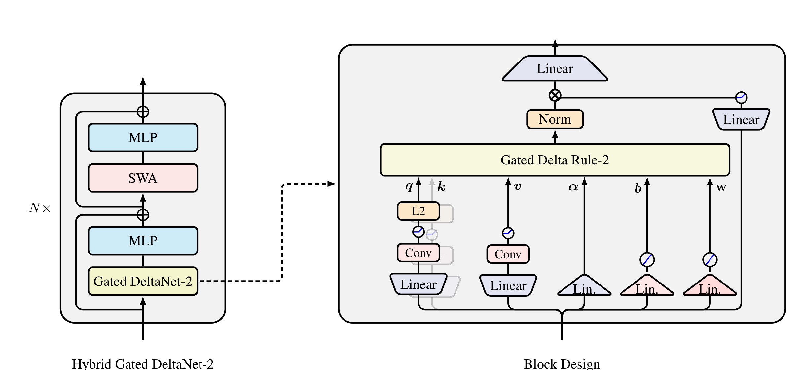
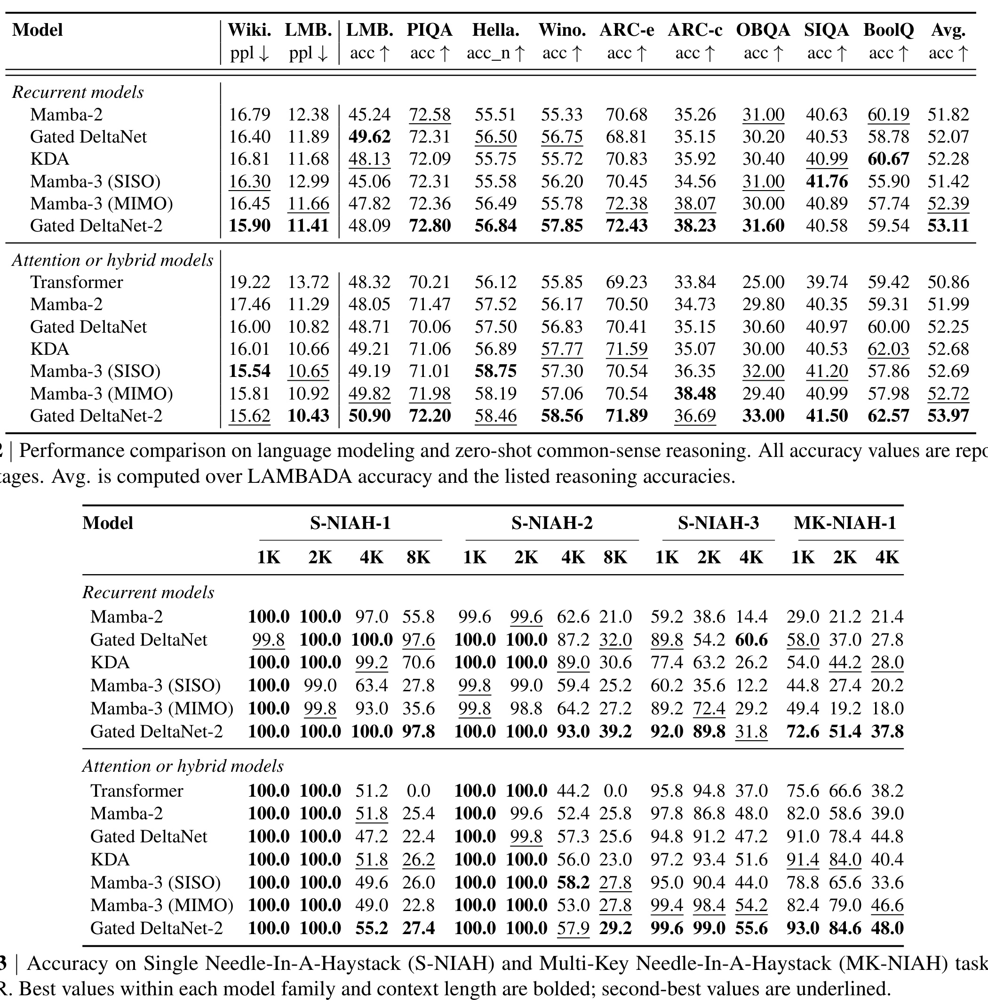
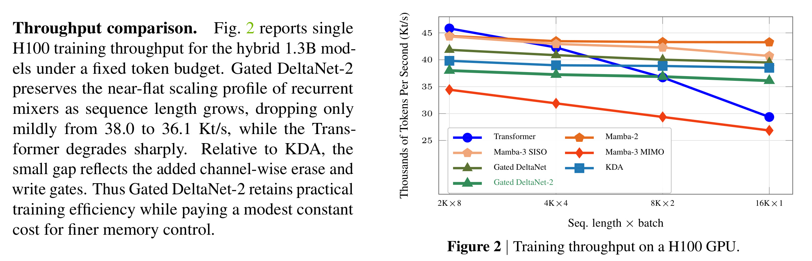

这里精读一篇 2026-05-21 submitted 公开的论文《Gated DeltaNet-2: Decoupling Erase and Write in Linear Attention》。中文可译为《Gated DeltaNet-2：在线性注意力中解耦擦除和写入》。论文链接：arXiv:2605.22791。作者为 Ali Hatamizadeh, Yejin Choi, Jan Kautz；机构/团队记录为 NVIDIA。代码/项目页状态：已核验 GitHub: https://github.com/NVlabs/GatedDeltaNet-2。
1. 背景和问题
Softmax attention 的上下文和 cache 随序列长度增长，长上下文训练/推理成本高。线性注意力和 recurrent attention 用固定大小状态替代显式 attention matrix，但难点是压缩状态怎么稳定存取历史关联。DeltaNet、Gated DeltaNet、KDA、Mamba-3 等路线都在解决“忘什么、写什么、如何避免覆盖已有信息”。Gated DeltaNet-2 指出现有 delta-rule 的一个限制：同一个 scalar gate 同时控制 key-side erase 和 value-side write，而这两个动作本质不同。
这篇论文放在今天的调研里，主要因为它把一个热门概念落到了具体链路。它不是做 KV cache 剪枝，而是从 recurrent linear attention 的状态更新本身改进长期记忆：把 erase gate 和 write gate 分离，让固定大小状态更好地编辑旧关联和写入新值。 如果只看标题，很容易把它理解成又一篇泛泛使用 LLM 或推荐系统的工作；但从原文的任务设定、图表和实验看，它真正关心的是系统中哪一个环节最脆弱、哪一个中间表示最需要被重新设计。对工程读者来说，先厘清这个问题，比记住模型名更重要。
2. 方法
Gated Delta Rule-2 引入 channel-wise erase gate b_t 和 channel-wise write gate w_t。erase 在 key side 决定从旧读出里移除哪些坐标，write 在 value side 决定新值提交多少；两者不再共享一个标量。方法继承 KDA 的 channel-wise decay，并推导 fast-weight update view、chunkwise WY algorithm 和 gate-aware backward pass，使训练仍能并行。架构上，Gated DeltaNet-2 token mixer 可单独组成 recurrent 模型，也可以和 sliding-window attention 交替形成 hybrid block：recurrent mixer 负责长程压缩，SWA 保留局部精确交互。

Figure 1 展示 hybrid architecture 和 block design。右侧的 token mixer 同时产生 query/key/value、channel-wise decay、erase gate 与 write gate；左侧则说明它如何与 MLP 和 sliding-window attention 组成 hybrid cell。读这张图时要抓住分工：recurrent mixer 负责固定状态长程记忆，SWA 保留局部精确交互。
方法上可以把它拆成三层理解。第一层是输入输出边界：模型或系统到底读什么、产出什么、产物是否能直接进入下游链路。第二层是训练或优化信号：论文使用的是监督、强化、合成标签、结构约束还是运行时验证。第三层是部署边界：高成本模块是否在线、是否可缓存、是否有回滚与审计、是否会影响已有召回/排序/推理服务。沿这三层看，论文的贡献就不会只停留在“用了 LLM”或“加了一个模块”。
对比已有方法，本文的共同特点是把自由度收窄到可验证形式。Airbnb 把 LLM 合成限制在 listing pair 和 seed language 上；GCRS/ThinkGR 把生成约束到 semantic ID 或 docid；VPO 把多样性定义到 reward vector；Gated DeltaNet-2 把长期记忆压进可训练的 erase/write state update；MOSS 则把源码改写放进 trial worker 和 verdict pipeline。这样的设计比完全开放的生成更不浪漫，但更接近可落地系统。
3. 实验结果
模型规模为 1.3B，训练在 100B FineWeb-Edu tokens 上。比较对象包括 Mamba-2、Gated DeltaNet、KDA、Mamba-3 和 Transformer/hybrid variants。语言建模和常识推理表显示 Gated DeltaNet-2 平均表现最强；RULER needle-in-a-haystack 尤其多键检索任务上，解耦 erase/write 的优势更明显。真实检索任务表和 H100 throughput 图说明，它在长序列下保持近似平坦吞吐，而 Transformer 随长度退化更明显。消融中把 gate 压成 scalar 或改变 erase range 都会影响结果，支持结构设计。

Table 2-3 说明 Gated DeltaNet-2 不只是 perplexity 稍好，而是在固定状态记忆压力大的 NIAH、多键检索场景更突出。多键检索要求模型把不同 key-value association 分开保存，正好对应 erase/write 解耦要解决的状态编辑问题。

Figure 2 把吞吐和序列长度联系起来。Transformer 随上下文变长明显退化，而 Gated DeltaNet-2 保持更平坦的 throughput。对长上下文服务而言，这类结果提示一种不同路线：不只是优化 KV cache，也可以用固定状态 recurrent mixer 改变内存增长曲线。
实验解读时我更关注三个问题。第一，指标是否和论文主张一致：例如冷启动搜索不能只看生成文本质量，必须看检索/排序样本是否有区分度；后训练多样性不能只看单次 pass@1，还要看 best@k。第二，消融是否真的切中了核心机制：去掉 seed、去掉 structured generation、去掉 hybrid decoding、合并 erase/write gate 或删除验证回放，应该能解释主要退化。第三，实验是否给出工程成本信号：延迟、token cost、吞吐、代码可用性、线上部署形态或回滚机制，决定它能否从论文进入系统。
这篇论文的证据整体是有价值的，但不能过度外推。公开 benchmark、预印本实验和工业摘要都只能证明某个受控条件下的收益；真实推荐/搜索/Agent/LLM serving 系统还会受到流量分布、库存变化、硬件、权限、隐私、灰度策略和监控口径影响。因此这份笔记把实验当作“方向证据”，不把它写成确定性工程结论。
4. 总结
对 LLM，它提供了长上下文模型不只靠扩大窗口和 cache 管理，也可以改状态更新算子的证据。对推荐/检索，它提醒序列用户建模中的“旧兴趣擦除”和“新兴趣写入”也可能需要解耦，而不是用一个门控同时控制。
4.1 我的判断
我认为这篇论文最值得保留的不是单个指标，而是它对系统边界的处理。它没有把所有问题都交给一个更大的模型，而是明确哪些信号要生成、哪些信号要约束、哪些信号要留给下游检索/排序/验证/推理框架。这个思路对于后续做推荐系统和大模型交叉非常重要：LLM 的能力要变成系统收益，必须经过候选空间、约束解码、reward、缓存、回放或人审这些接口。
4.2 工程启发与复现建议
第一，复现时不要从完整系统开始，应先复现最小闭环：输入、约束、指标和一个可替换 baseline。第二，所有生成中间产物都要保留可追溯来源，尤其是合成 query、CoT、semantic ID、docid、reward vector 或自改写 patch。第三，线上前要设置反事实检查：去掉 LLM 信号、打乱中间表示、降低刷新频率或替换 reward，看指标是否仍然成立。第四，要把成本作为一等指标，包含 token、GPU、延迟、工程复杂度和出错后的回滚成本。
4.3 局限与后续跟进
局限主要有四点：结果基于 1.3B 与 100B tokens，能否扩展到更大 dense/MoE 模型仍需验证。；recurrent state 对精确长程复制的能力仍有限，hybrid SWA 说明局部精确 attention 仍不可或缺。；代码虽可访问，但训练复现成本高，需要大规模预训练资源。；RULER 与真实长文任务仍有差距，生产问答和代码场景需要更多忠实性评估。。这些局限并不否定论文价值，但决定了它适合先作为研究原型或局部链路增强，而不是直接替换既有生产系统。
后续跟进建议：查看 NVlabs 仓库实现，重点看 gate-aware backward 和 chunkwise WY。；比较 Gated DeltaNet-2 与 Mamba-3/Kimi Linear 在相同 tokenizer、数据和推理框架下的成本。；关注 vLLM/SGLang 是否出现对 recurrent linear attention 的高效 serving 支持。。本轮自动化已经下载 PDF、裁剪关键图表并生成本地笔记；如果本笔记字符数低于 10000，是因为本轮只保留了已在 PDF、arXiv 页面或可访问链接中核验的事实，没有为满足字数硬补未核验实现细节。